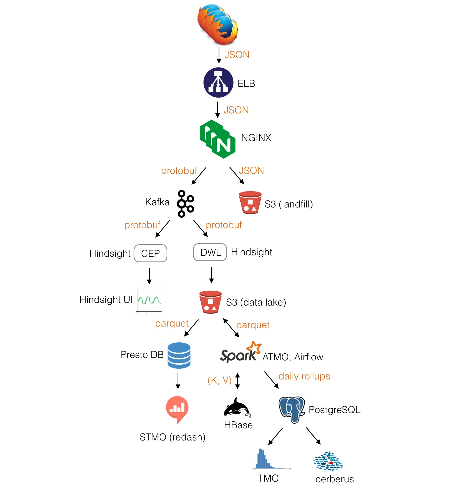

An overview of Mozilla’s Data Pipeline
This post describes the architecture of Mozilla’s data pipeline, which is used to collect Telemetry data from our users and logs from various services. One of the cool perks of working at Mozilla is that most of what we do is out in the open and because of that I can do more than just show you some diagram with arrows of our architecture; I can point you to the code, script & configuration that underlies it!
To make the examples concrete, the following description is centered around the collection of Telemetry data. The same tool-chain is used to collect, store and analyze data coming from disparate sources though, such as service logs.

Firefox
There are different APIs and formats to collect data in Firefox, all suiting different use cases:
- histograms – for recording multiple data points;
- scalars – for recording single values;
- timings – for measuring how long operations take;
- events – for recording time-stamped events.
These are commonly referred to as probes. Each probe must declare the collection policy it conforms to: either opt-out (aka base telemetry) or opt-in (aka extended telemetry). When adding a new measurement data-reviewers carefully inspect the probe and eventually approve the requested collection policy:
- opt-out (base telemetry) data is collected by default from all Firefox users; users may choose to turn this data collection off in preferences;
- opt-in (extended telemetry) data is collected from users who explicitly express a choice to help with Firefox development; this includes all users who install pre-release & testing builds, plus release users who have explicitly checked the box in preferences.
A session begins when Firefox starts up and ends when it shuts down. As a session could be long-running and last weeks, it gets sliced into smaller logical units called subsessions. Each subsession generates a batch of data containing the current state of all probes collected so far, i.e. a main ping, which is sent to our servers. The main ping is just one of the many ping types we support. Developers can create their own ping types if needed.
Pings are submitted via an API that performs a HTTP POST request to our edge servers. If a ping fails to successfully submit (e.g. because of missing internet connection), Firefox will store the ping on disk and retry to send it until the maximum ping age is exceeded.
Kafka
HTTP submissions coming in from the wild hit a load balancer and then an NGINX module. The module accepts data via a HTTP request which it wraps in a Hindsight protobuf message and forwards to two places: a Kafka cluster and a short-lived S3 bucket (landfill) which acts as a fail-safe in case there is a processing error and/or data loss within the rest of the pipeline. The deployment scripts and configuration files of NGINX and Kafka live in a private repository.
The data from Kafka is read from the Complex Event Processors (CEP) and the Data Warehouse Loader (DWL), both of which use Hindsight.
Hindsight
Hindsight, an open source stream processing software system developed by Mozilla as Heka’s successor, is useful for a wide variety of different tasks, such as:
- converting data from one format to another;
- shipping data from one location to another;
- performing real time analysis, graphing, and anomaly detection.
Hindsight’s core is a lightweight data processing kernel written in C that controls a set of Lua plugins executed inside a sandbox.
The CEP are custom plugins that are created, configured and deployed from an UI which produce real-time plots like the number of pings matching a certain criteria. Mozilla employees can access the UI and create/deploy their own custom plugin in real-time without interfering with other plugins running.

The DWL is composed of a set of plugins that transform, convert & finally shovel pings into S3 for long term storage. In the specific case of Telemetry data, an input plugin reads pings from Kafka, pre-processes them and sends batches to S3, our data lake, for long term storage. The data is compressed and partitioned by a set of dimensions, like date and application.
The data has traditionally been serialized to Protobuf sequence files which contain some nasty “free-form” JSON fields. Hindsight gained recently the ability to dump data directly in Parquet form though.
The deployment scripts and configuration files of the CEP & DWL live in a private repository.
Spark
Once the data reaches our data lake on S3 it can be processed with Spark. We provide a portal (ATMO) that allows Mozilla employees to create their own Spark cluster pre-loaded with a set of libraries & tools, like jupyter, numpy, scipy, pandas etc., and an API to conveniently read data stored in Protobuf form on S3 in a Spark RDD using a ORM-like interface. Behind the scenes we use EMR to create Spark clusters, which are then monitored by ATMO.

ATMO is mainly used to write custom ad-hoc analyses; since our users aren’t necessary data engineers/scientists we chose Python as the main supported language to interface with Spark. From ATMO it’s also possible to schedule periodic notebook runs and inspect the results from a web UI.
As mentioned earlier, most of our data lake contains data serialized to Protobuf with free-form JSON fields. Needless to say, parsing JSON is terribly slow when ingesting TBs of data per day. A set of ETL jobs, written in Scala by Data Engineers and scheduled with Airflow, create Parquet views of our raw data. We have a Github repository telemetry-batch-view that showcases this.
A dedicated Spark job feeds daily aggregates to a Postgres database which powers a HTTP service to easily retrieve faceted roll-ups. The service is mainly used by TMO, a dashboard that visualizes distributions and time-series, and cerberus, an anomaly detection tool that detects and alerts developers of changes in the distributions. Originally the sole purpose of the Telemetry pipeline was to feed data into this dashboard but in time its scope and flexibility grew to support more general use-cases.

Presto & re:dash
We maintain a couple of Presto clusters and a centralized Hive metastore to query Parquet data with SQL. The Hive metastore provides an universal view of our Parquet dataset to both Spark and Presto clusters.
Presto, and other databases, are behind a re:dash service (STMO) which provides a convenient & powerful interface to query SQL engines and build dashboards that can be shared within the company. Mozilla maintains its own fork of re:dash to iterate quickly on new features, but as good open source citizen we push our changes upstream.

HBase
We use HBase to store the history of pings by client. It’s a relatively new addition and it provides support for fast needle-in-haystack queries.
Is that it?
No, not really. For example, the DWL pushes some of the Telemetry data to Redshift and Elasticsearch but those tools satisfy more niche needs. The pipeline ingests logs from services as well and there are many specialized dashboards out there I haven’t mentioned. We also use Zeppelin as a means to create interactive data analysis notebooks that supports Spark, SQL, Scala and more.
There is a vast ecosystem of tools for processing data at scale, each with their pros & cons. The pipeline grew organically and we added new tools as new use-cases came up that we couldn’t solve with our existing stack. There are still scars left from that growth though which require some effort to get rid of, like ingesting data from schema-less format.